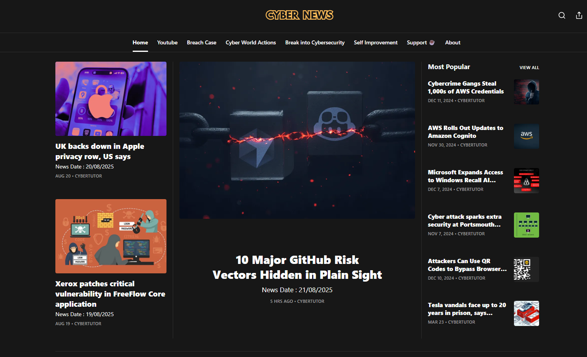
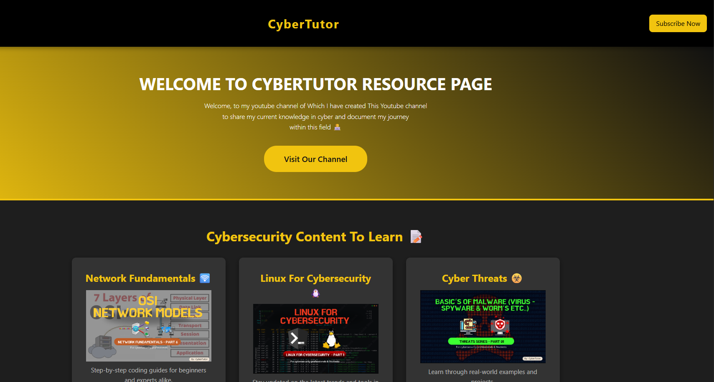
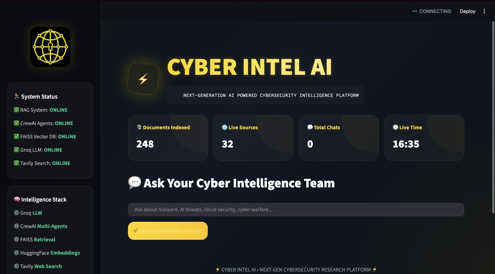

استلهمتُ لأصبح مهندسًا للأمن السيبراني ☁️ | صانع محتوى CyberTutor 🎥 | كاتب في Cybernews ✍️ | مطوّر منفرد
كهواية 🧑💻 | طالب في جامعة برونيل لندن 🎓
أقدر الاتساق والانضباط والتعلم الذاتي والتفكير خارج الصندوق.
</نبذة عني>
إن الأمن السيبراني يثير اهتمامي لأنه مجال يؤتي فيه الفضول ثماره حقًا. لا يحفزني اكتشاف كيفية عمل الأنظمة فحسب، بل أيضًا كيفية التغلب على التهديدات التي تواجهها. هذه العقلية تجعلني أستكشف عالم الأمن السيبراني سريع الحركة وتدفعني باستمرار إلى النمو.
أدرس الآن الأمن السيبراني في جامعة برونيل، وأضفي الحياة على التعلم من خلال العمل في المختبرات والمسابقات والمشاريع الذاتية التي لا تنتظر الفرص أبدًا بل تصنعها. تتمثل رؤيتي طويلة المدى في حماية الأنظمة الحيوية بصفتي مهندسًا لأمن السحابة مع مشاركة الأفكار وإلهام الآخرين من خلال إنشاء المحتوى والتدوين عبر الإنترنت، لأن التكنولوجيا بالنسبة لي تدور حول البناء والإلهام.
أنا أستمتع بالقراءة وركوب الدراجات واحتساء القهوة الجيدة، مما يبقيني نشيطًا وفضوليًا. ☕📚
</مؤسس>
باعتباري مؤسس CyberTutor، قمت بإنشاء قناة YouTube هذه لجعل الأمن السيبراني بسيطًا ومثيرًا ومتاحًا للجميع. من خلال البرامج التعليمية الواضحة والمشاريع العملية والرؤى الواقعية، أهدف إلى مساعدة كل من المبتدئين والمحترفين على صقل مهاراتهم والبقاء في المقدمة في العالم الرقمي حتى إذا كنت فضوليًا.

كتاب The Three Corners هو دليل للتطوير الذاتي يساعد القارئ على النمو بوضوح وهدف. يركز على تحقيق التوازن بين العقل والجسد والروح باعتبارها الزوايا الثلاث الأساسية لحياة متكاملة. ومن خلال أفكار عملية، يشجع على عادات يومية تدعم القوة والانضباط والسلام الداخلي.

لقد قمت بإنشاء تطبيق الهاتف المحمول هذا كمولد رمز الاستجابة السريعة القابل للمسح الضوئي لمرة واحدة مع واجهة نظيفة وبسيطة. لا يمكن مسح كل رمز ضوئيًا إلا مرة واحدة بشكل مثالي للتذاكر والدعوات والوصول الحصري، مما يمنح المستخدمين الأمان والراحة. وأفضل ما في الأمر أنه متوفر في متجر تطبيقات Apple مقابل 0.99 جنيهًا إسترلينيًا فقط.

مرحبًا بك في مدونة Cybernews، مصدرك الموثوق لأحدث الأفكار والرؤى في الأمن السيبراني والتكنولوجيا.

صفحة موارد طلاب CyberTutor: لقد قمت أيضًا بإنشاء صفحة الموارد وهي مركز مخصص مليء بأدلة الدراسة ومجموعات الأدوات وتوصيات الكتب والروابط المنسقة لمساعدة المتعلمين على تعميق معرفتهم.

منصة الأمن السيبراني متعددة الوكلاء المدعومة بالذكاء الاصطناعي: لقد قمت بتطوير منصة للأمن السيبراني تعتمد على الذكاء الاصطناعي والتي تستفيد من أنظمة الوكلاء المتعددة لتوفير معلومات عن التهديدات في الوقت الفعلي، والاستجابة الآلية للحوادث، واستراتيجيات الدفاع الاستباقية. يهدف هذا المشروع إلى تزويد فرق الأمن بأدوات متقدمة للبقاء في صدارة التهديدات السيبرانية المتطورة.
